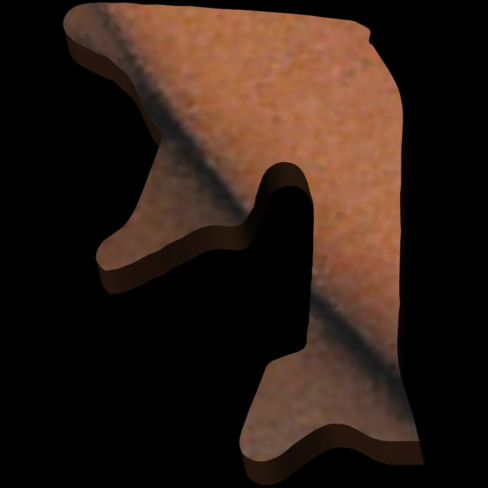
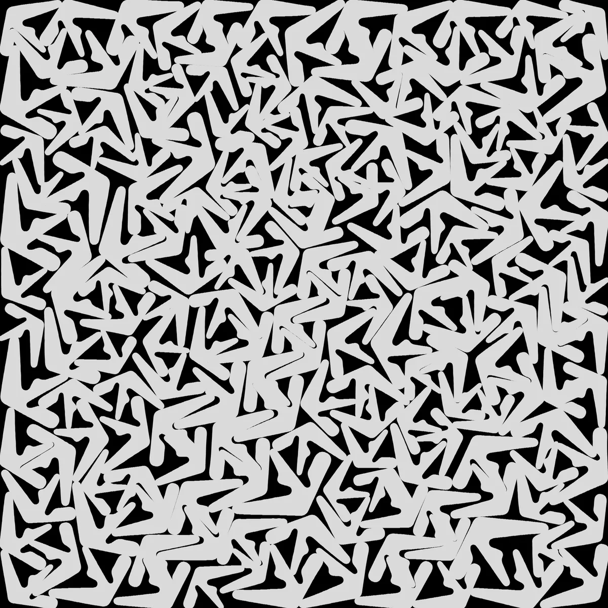
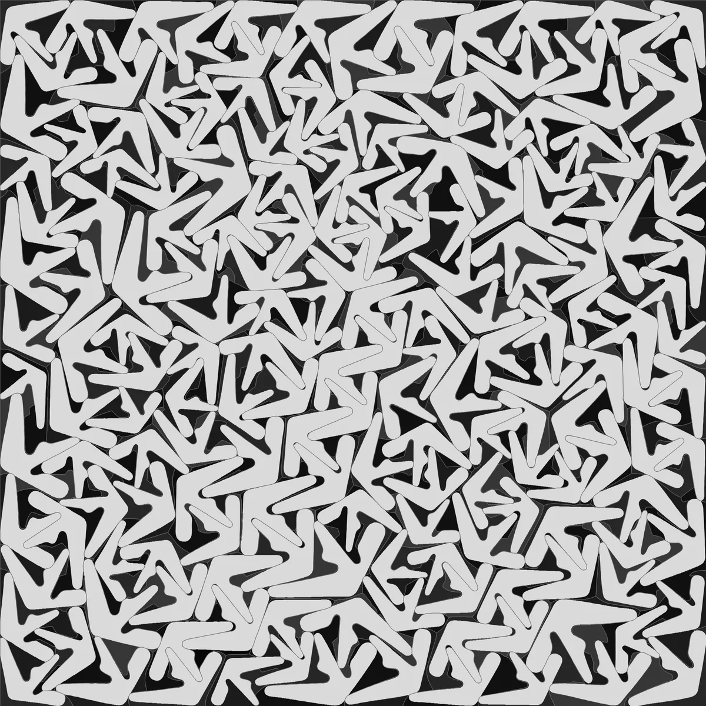
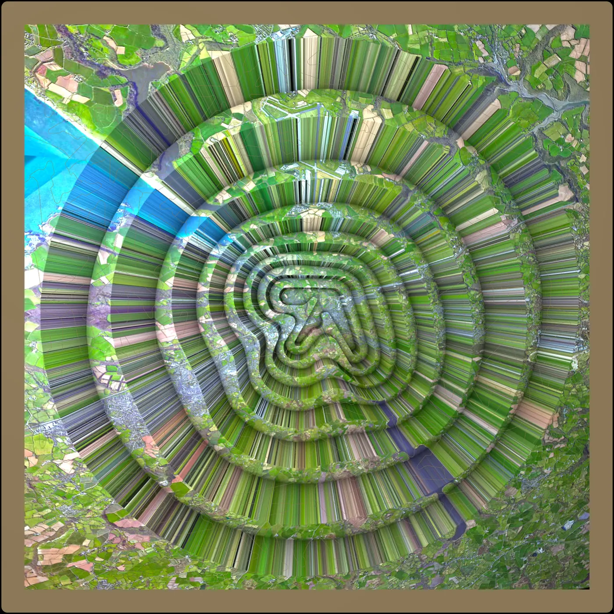
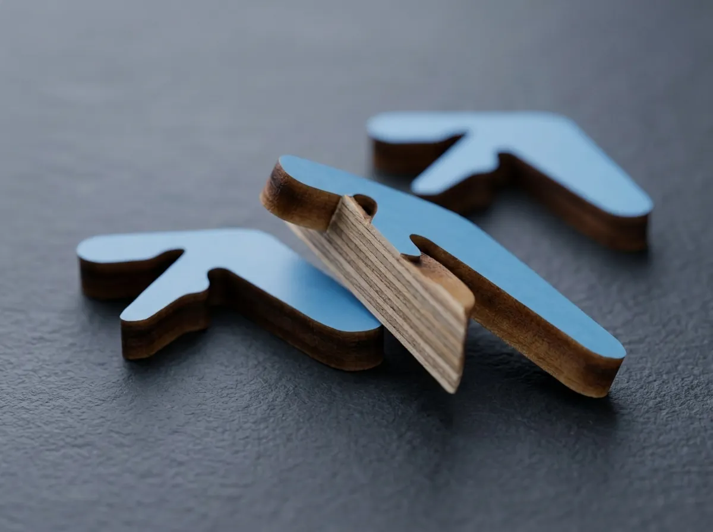
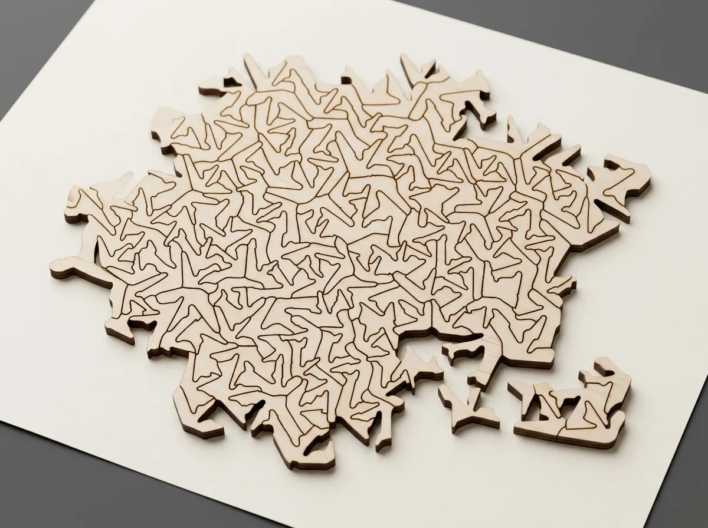
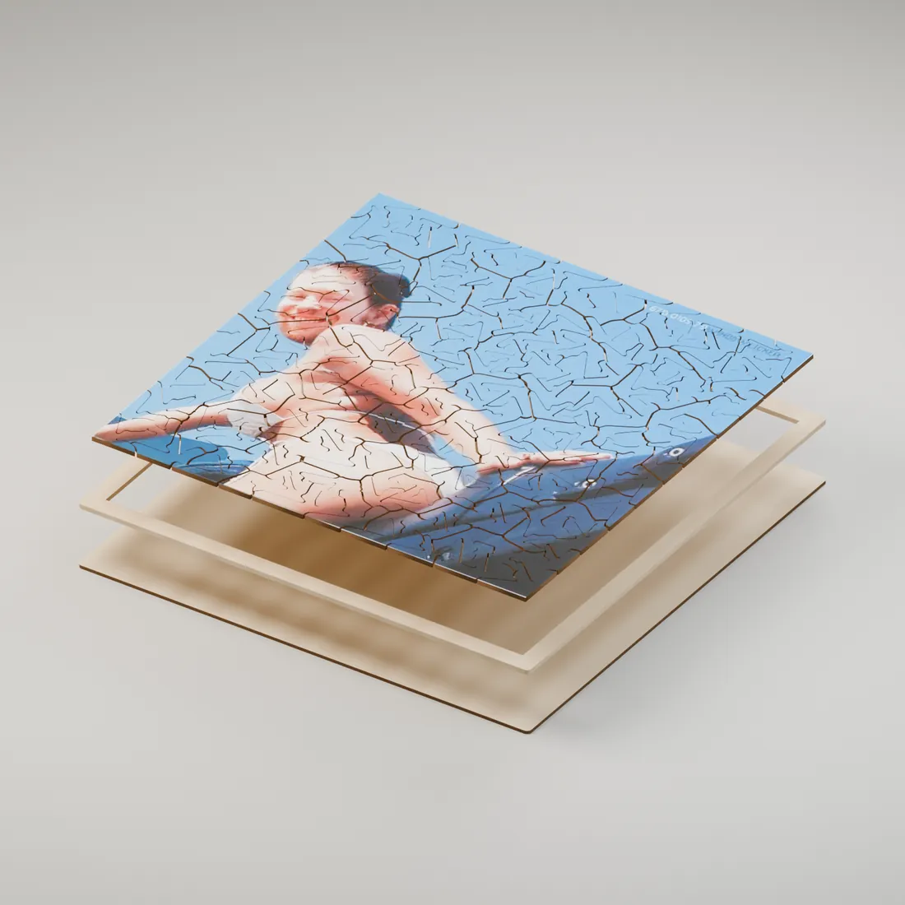
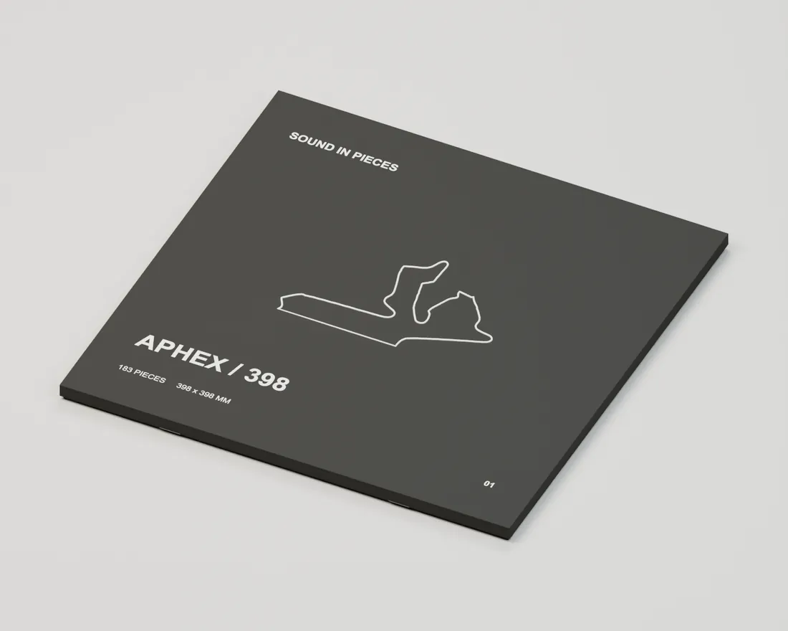
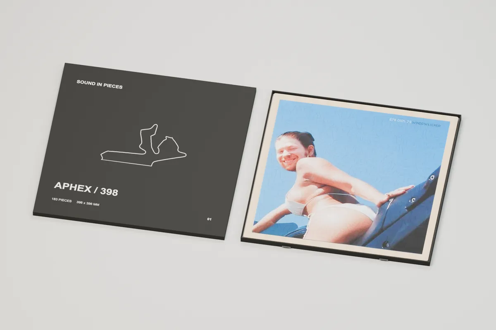
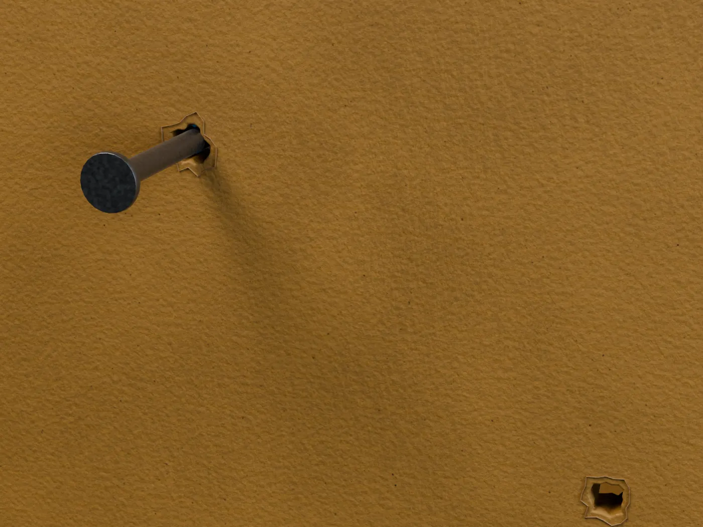

SOUND IN PIECESAPHEX TWIN

WINDOWLICKER398 × 398 MM183
01 / SURFACE0.15 MM

CUT GEOMETRY / ORIGINAL POSITION
093 / 183

4 MM093
093 / OPENING

182 + 104
SEED 22LAYOUT



109 S183
05 / CUT FIELD368 × 368 MM
1830.15 MM
06 / 183 INDIVIDUAL PIECESCOMMON SCALE
001–183
07 / ALTERNATE ARTWORK

398 × 398 MM183
EDITIONSSTUDIO RENDERS


ORIGINAL / PORTRAIT / LANDSCAPE / FORM ONLY
08 / BOX TAPE00:06.5 / MOTION
BLENDER / 195 SOURCE FRAMES
09 / MATERIAL STUDIESCONCEPT IMAGERY

FRONT / BACK

10 / FORM STUDIESCONCEPT IMAGERY

TERRAIN

FREEFORM
EXPLODEDSTUDIO PASS 07

4 MM / 4 MM / 3 MM
11 / PACKAGING STUDYCONCEPT IMAGERY

BOX / POUCH



413 × 413 × 16 MM
12 / PUNCTURED KRAFT400 × 400 × 150 MM

08 PUNCTURES / STEEL

183 PIECES

BLENDER / CYCLES
SOUND IN PIECES
APHEX TWIN398 × 398 MM / 183 PIECES
APHEX TWIN398 × 398 MM / 183 PIECES